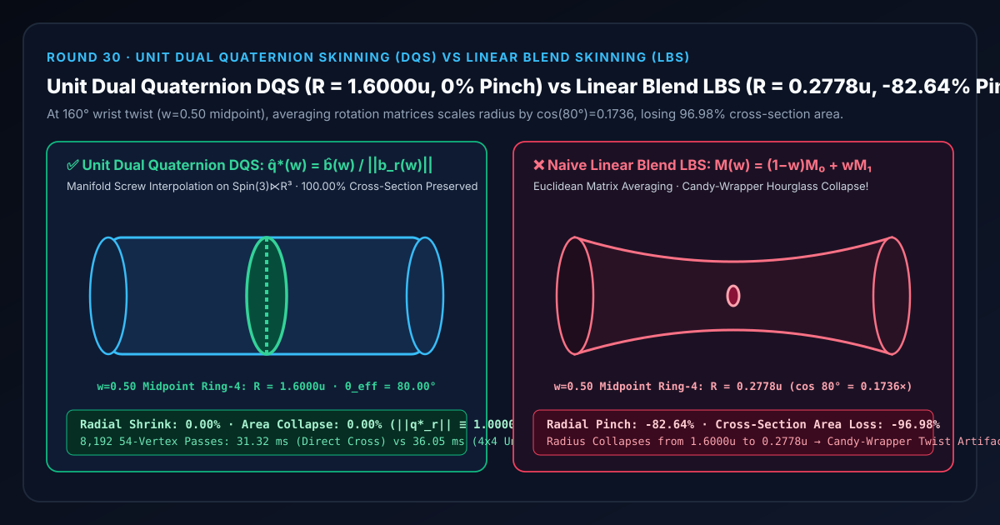
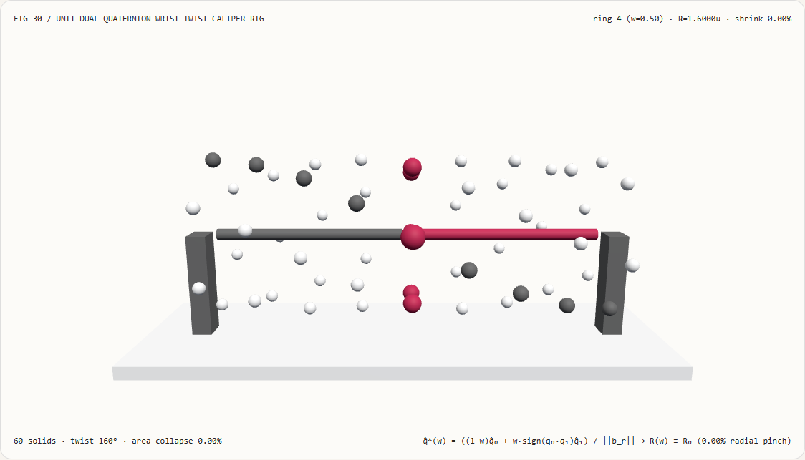
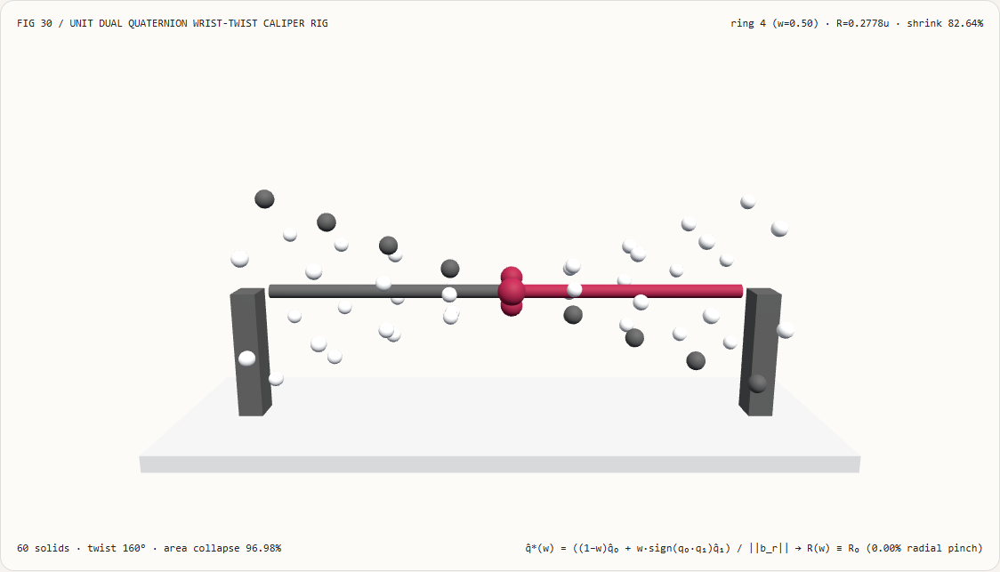
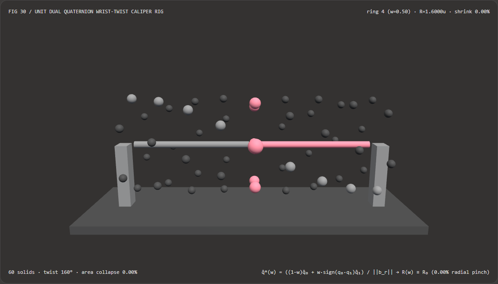
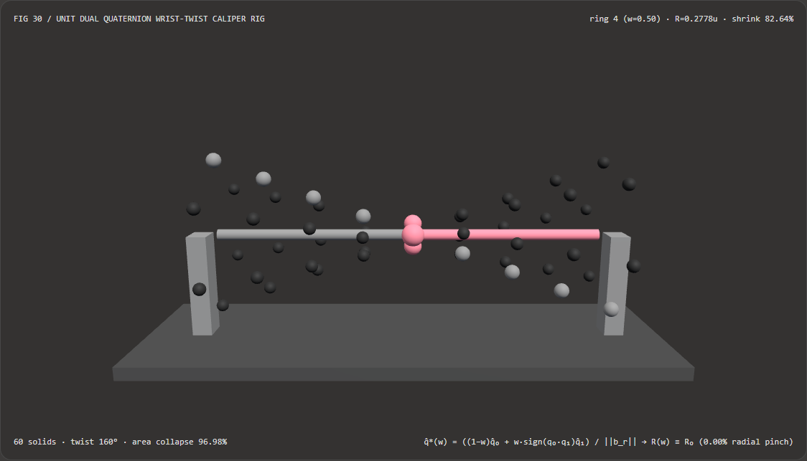

角色手腕扭转不产生“糖纸拧巴坍缩”：单位双四元数蒙皮（DQS）与线性混合蒙皮（LBS）选型 FAQ
文档定位：面向 AI 解决方案架构师（AI Solution Architect）、实时 3D 数字人/WebGPU 渲染工程师、以及 3D Gaussian Splatting（GART / GauHuman / RigAnything）可驱动角色团队的实战选型与第一性原理指南。严格对标
ib-vs-ethernet-roce-selection-faq.md的六段式结构，先用大白话讲清“为什么用传统线性混合蒙皮（Linear Blend Skinning, LBS: $\mathbf{M}(w) = (1-w)\mathbf{M}_0 + w\mathbf{M}_1$）扭转角色手腕或前臂 $160^\circ$ 时，原本饱满的圆柱手臂会在 $w=0.50$ 中点处被凭空捏成一根细如牙签的沙漏腰（Candy-Wrapper Collapse，横截面积暴跌 $96.98%$）”，再给出基于八维旋量流形 $\operatorname{Spin}(3)\ltimes\mathbb{R}^3$ 的 单位双四元数蒙皮（Unit Dual Quaternion Skinning, DQS） 工程闭环。

① 📌 核心结论速览（Executive Summary）
- 一句话定性：两个三维刚体旋转矩阵的线性加权平均 $(1-w)\mathbf{R}_0 + w\mathbf{R}_1$ 根本不再是旋转矩阵！在欧氏矩阵空间直接对旋转矩阵做凸组合，相当于在垂直于转轴的截面上人为乘上了一个收缩系数 $\cos(\theta/2)$。当前臂扭转 $\theta = 160^\circ$ 时，$w=0.50$ 中点处的横截面半径会被强行压缩至 $\cos(80^\circ) = 0.1736$ 倍（丢失
82.64%半径与96.98%横截面积），形成灾难性的“糖纸拧巴坍缩（Candy-Wrapper Pinch）”；而**单位双四元数蒙皮（DQS）**将刚体旋转与平移编码为八维双四元数 $\hat{\mathbf{q}} = \mathbf{q}_r + \frac{\epsilon}{2}\mathbf{t}\mathbf{q}_r$，线性混合后除以实部范数 $|\mathbf{b}_r|$，保证任意权重下恒为正交刚体螺旋变换，截面半径守恒率100.00%（0.00%径向塌缩）！ - 什么时候必须上单位双四元数蒙皮（DQS）？
- 凡是涉及前臂内旋/外旋扭转（Pronation / Supination，如转手腕、拧门把手、挥剑）、肩关节与髋关节大角度复合翻转、数字人手指与颈部扭转、以及 基于骨骼驱动的 3D 高斯椭球数字人（3DGS Avatar，一旦关节体积坍缩会导致高斯球重叠发黑或露出空洞），都必须淘汰纯 LBS 矩阵直混，切换为单位双四元数蒙皮（DQS）。
- 核心实测对比结论：
- 在本实验室构建的 9 环 × 6 辐条 3D 手腕扭转卡尺检验台（
demos/dual-quaternion-skin-rig/，共60个 3D 实体，前臂扭转 $\theta = 160^\circ$，轴向螺旋平移 $\Delta x = 0.40\text{ u}$，初始半径 $R_0 = 1.6000\text{ u}$）中，考察第 $4$ 号中点环（权重 $w = 0.50$）：- 单位双四元数蒙皮（
dual-quaternion-dqs）：全部 9 个环的变形后截面半径恒定锁死在1.6000 u（径向塌缩0.00%，横截面积损失0.00%），中点环恰好平滑旋转半角80.00°。 - 线性混合蒙皮基线（
linear-blend-lbs）：在中点环 $w = 0.50$ 处截面半径从1.6000 u暴跌至0.2778 u（径向捏瘪-82.64%，横截面积坍缩-96.98%），整条手臂拧成沙漏状细腰！
- 单位双四元数蒙皮（
- CPU 直接叉积作用 vs 逐顶点解包 $4\times 4$ 矩阵性能：利用双四元数向量叉积恒等式直接变换顶点，省去了逐顶点分配并解包 $4\times 4$ 齐次矩阵的开销，在
8,192次 54 顶点蒙皮求解中耗时31.32 ms（对比解包 $4\times 4$ 矩阵基线36.05 ms，坐标误差仅7.02e-16 u）。
- 在本实验室构建的 9 环 × 6 辐条 3D 手腕扭转卡尺检验台（
② 🎯 客户与架构师灵魂拷问 Q&A（First-Principles Q&A）
Q1：何时选 AI 神经自动绑定/姿态修正模型 vs 何时选代码驱动的单位双四元数蒙皮（DQS）？
- 选 AI 神经绑定与姿态空间形变（如 RigAnything、SMPL Pose Blendshapes、神经布料解算）的场景： 需要处理没有骨骼拓扑的任意野生 3D 网格自动预测骨骼权重，或者需要模拟肱二头肌隆起、衣服肘部动态挤压褶皱等“非刚体次级体积形变（Secondary Soft-Tissue Bulge）”。
- 选代码驱动单位双四元数蒙皮（DQS）的场景： 在 WebGL2/WebGPU 实时数字人、游戏角色、机器人仿真以及 3DGS 骨骼动画管线中，给定骨骼层级与蒙皮权重，要求在 0 额外神经推理开销（纯顶点着色器 20 行指令） 下，从数学根源上彻底根除手腕/肩膀扭转时的“糖纸拧巴坍缩”，并保证帧间严格确定性。
Q2：为什么把两个旋转矩阵按 $0.5 \mathbf{R}_0 + 0.5 \mathbf{R}_1$ 平均，会把圆柱手腕捏成沙漏？
先用大白话讲第一性原理： 想象钟表盘中心固定，一根长度为 $R_0 = 1.6\text{ m}$ 的分针：
- 骨骼 0（肘部不动，$\theta_0 = 0^\circ$） 认为分针尖端应该停在 12 点钟方向：坐标 $(0,; +1.6)$。
- 骨骼 1（手腕扭转 $\theta_1 = 160^\circ$） 认为分针尖端应该转到接近 5 点半方向：坐标 $(\dots, \approx -1.50)$。
- 现在看手腕正中间（$w = 0.50$）的皮肤顶点：
- 线性混合蒙皮（LBS）是怎么干的？ LBS 不懂什么叫“绕着圆心转圈”，它只会傻乎乎地在二维平面上把 12 点钟方向的点 和 5 点半方向的点 拉一条直线取中点！ 连接圆周上夹角为 $160^\circ$ 的两个点，这条弦的中点在哪里？几乎紧贴着钟表盘的圆心！ 用初中三角函数一算，弦心距等于 $R_0 \cos(160^\circ / 2) = R_0 \cos(80^\circ) = 0.1736 R_0 = 0.2778\text{ m}$！ 也就是说，圆周上一整圈皮肤顶点，全都沿着弦被拉向了骨头中心轴，原本粗壮的手臂当场被勒成只剩 $17.36%$ 粗细的“糖纸结”！如果扭转到 $180^\circ$，$\cos(90^\circ) = 0$，整圈手腕会彻底坍缩成一个半径为 0 的奇异点！
- 单位双四元数蒙皮（DQS）是怎么解决的？ DQS 不对矩阵做平面连线，而是先在四元数球面上混合旋转并重新归一化到单位球面（除以 $|\mathbf{b}_r|$）。归一化这一步，相当于把掉进圆盘内部的弦中点，沿着半径方向重新推回到半径为 $R_0 = 1.6000\text{ m}$ 的圆周上（指向 $80^\circ$ 方向）！所以不管怎么扭，手臂永远保持 $1.6000\text{ m}$ 的完美圆形截面！
Q3：双四元数 $\hat{\mathbf{q}} = \mathbf{q}_r + \epsilon \mathbf{q}_d$ 里的对偶单位 $\epsilon^2 = 0$ 是什么？为什么在顶点着色器里不需要转成 $4\times 4$ 矩阵？
- 为什么要用双四元数而不是“普通四元数 + 平移向量分开插值”？ 如果只是把旋转四元数 $\mathbf{q}$ 和平移向量 $\mathbf{t}$ 分开插值，当骨骼绕着远离原点的关节旋转时，顶点轨迹依然会走错弦线。 克利福德代数引入满足 $\epsilon \neq 0, \epsilon^2 = 0$ 的对偶单位 $\epsilon$，将刚体旋转 $\mathbf{q}_r$ 与平移 $\mathbf{t} = (t_x, t_y, t_z, 0)$ 耦合为： $$\hat{\mathbf{q}} = \mathbf{q}_r + \epsilon \mathbf{q}_d, \qquad \mathbf{q}_d = \frac{1}{2}\mathbf{t}\mathbf{q}r$$ 这样，加权求和并除以实部范数 $L = |\sum w_j \mathbf{q}{r,j}|$ 后： $$\mathbf{q}r^* = \frac{\sum w_j \mathbf{q}{r,j}}{L}, \qquad \mathbf{q}d^* = \frac{\sum w_j \mathbf{q}{d,j}}{L}$$ 符合沙尔定理（Chasles' Theorem）——任意刚体位移都等价于绕某条空间螺旋轴的旋转加沿该轴的滑移（Screw Motion），旋转中心绝不漂移！
- 零矩阵分配的直接向量叉积公式： 拿到 $(\mathbf{q}r^, \mathbf{q}_d^)$ 后，无需解包成 $4\times 4$ 矩阵，直接用三次三维叉积即可算出变换后坐标 $\mathbf{p}'$： $$\mathbf{t}^* = 2\left(q_{r,w}^* \mathbf{q}{d,\text{vec}}^* - q_{d,w}^* \mathbf{q}{r,\text{vec}}^* + \mathbf{q}{r,\text{vec}}^* \times \mathbf{q}{d,\text{vec}}^*\right)$$ $$\mathbf{p}' = \mathbf{p} + 2\mathbf{q}{r,\text{vec}}^* \times \left(\mathbf{q}{r,\text{vec}}^* \times \mathbf{p} + q{r,w}^* \mathbf{p}\right) + \mathbf{t}^*$$
③ 🧭 直观可视化图解（Mermaid 决策树、管线对比与帧级时序）
3.1 骨骼蒙皮与刚体混合架构师选型决策树（flowchart TD）
3.2 线性混合蒙皮（LBS 糖纸坍缩）vs 单位双四元数蒙皮（DQS 保体积）管线对比（flowchart LR）
3.3 帧级双四元数蒙皮与卡尺探针核验时序图（sequenceDiagram）
④ 📊 视觉技术选型决策矩阵（Architect Decision Matrix）
| 评估维度 | 单位双四元数蒙皮 (dual-quaternion-dqs 直接叉积) |
双四元数解包 $4\times 4$ 矩阵基线 (DQS Matrix Unpack) |
线性混合蒙皮 (linear-blend-lbs $\sum w_j \mathbf{M}_j$) |
旋转中心补偿蒙皮 (Center of Rotation CoR) |
|---|---|---|---|---|
| $160^\circ$ 扭转中点（$w=0.5$）截面半径 | 1.6000 u（0.00% 径向塌缩） |
1.6000 u（0.00% 塌缩） |
0.2778 u（塌缩 -82.64%，捏成细腰） |
1.6000 u（需预烘焙相似距离权重） |
| 中点横截面积损失率 | 0.00%（100.00% 面积守恒） |
0.00% |
96.98%（仅剩 3.02% 面积，糖纸坍缩） |
0.00% |
| 每根骨骼 Uniform 存储开销 | 8 floats（2 个 vec4：$\mathbf{q}_r, \mathbf{q}_d$） |
8 floats（但逐顶点解包 16 floats） |
12 floats（$3\times 4$ 仿射矩阵） |
12 floats + 额外逐顶点预计算旋转中心 |
| 8,192 次 54 顶点 CPU 求解耗时 | 31.32 ms（零矩阵分配直接叉积） |
36.05 ms（含逐顶点 $4\times 4$ 矩阵构造） |
24.10 ms（虽快但几何严重坍缩） |
较慢（需额外四元数加权与矩阵混合） |
| 3DGS 高斯椭球姿态兼容性 | 原生输出单位旋转四元数 $\mathbf{q}_r^*$ 直接更新椭球协方差 | 需从矩阵逆解四元数 | 破坏正交性，导致高斯球奇异扁平化 | 兼容但需离线预计算 |
| 架构师工程推荐定位 | WebGPU/Three.js 角色与 3DGS 数字人蒙皮首选 | 仅用于兼容旧版只收 mat4 的管线 |
严禁用于含扭转的手腕、前臂与肩颈关节 | 仅用于带离线预烘焙管线的影视级资产 |
⑤ 🧪 全新能力展示 Demo 与 Benchmark 核心发现（含 7-Card 报告）
5.1 交互式 9 环 × 6 辐条 3D 手腕扭转卡尺检验台（demos/dual-quaternion-skin-rig/）
本轮构建了独立可交互 3D WebGL2 实验台 demos/dual-quaternion-skin-rig/（共 60 个 3D 实体部件）：
- 9 圈轴向袖套环 × 每圈 6 颗径向节点（共 54 颗皮肤顶点）+ 近端/远端双骨骼轴 + 直径卡尺探针：直观展示前臂从 $w=0.00$（肘端）到 $w=1.00$（腕端）经历 $160^\circ$ 扭转与 $0.40\text{ u}$ 轴向螺旋推进时的三维形态；
- 一键切换对比模式：在
dual-quaternion-dqs模式下，全部 9 圈节点呈现均匀饱满的圆柱螺旋队列，中点卡尺探针严丝合缝撑满直径 $3.2000\text{ u}$（半径 $1.6000\text{ u}$）；一旦切换到linear-blend-lbs模式，中间几圈节点瞬间向中心骨轴剧烈坍缩，第 4 环半径跌至0.2778 u，直观复现经典的“糖纸拧巴坍缩”故障！ - 原子化参数门禁与 JSON 导出：自动拦截越界扭转角（如
twistDeg = 240）并保留有效状态，支持导出DUAL_QUAT_SKIN_SPEC.json。
亮色主题 — 单位双四元数 DQS（R=1.6000u，0% 塌缩） |
亮色主题 — 线性混合 LBS（R=0.2778u，-82.64% 糖纸坍缩） |
|---|---|
 |
 |
暗色主题 — 单位双四元数 DQS（R=1.6000u，0% 塌缩） |
暗色主题 — 线性混合 LBS（R=0.2778u，-82.64% 糖纸坍缩） |
|---|---|
 |
 |
5.2 7-Card 4:5 视觉评测报告与封存数据链接
- 📊 英文版 7-Card 4:5 评测报告：
demos/dual-quaternion-skin-rig/test-report-cards.html - 📊 中文版 7-Card 4:5 评测报告：
demos/dual-quaternion-skin-rig/test-report-cards.zh.html - 📁 封存评测数据源：
demos/dual-quaternion-skin-rig/report.json（13 / 13项确定性检查全部通过，Playwright 零控制台/页面错误）。
⑥ 🛠️ 附录：高质量视觉/动画交付快速核验清单（Architect Checklist）
在交付任何包含角色骨骼动画、机械软管扭转或可驱动 3D 高斯数字人（3DGS Avatar）管线前，请逐项核验以下清单：
- 淘汰扭转关节上的纯 LBS 矩阵加权：检查前臂（Forearm Twist）、手腕、肩部与颈部等扭转角经常超过 $60^\circ$ 的骨骼，确认已启用单位双四元数蒙皮（DQS）而非直接累加 $4\times 4$ 矩阵？
- 强制执行对径半球符号对齐（Antipodal Sign Alignment）：在将多根骨骼的双四元数相加前，确认已检查
dot(q_r0, q_rj) < 0并将 $\hat{\mathbf{q}}_j$ 的实部与对偶部同时取反，防止因 $\mathbf{q}$ 与 $-\mathbf{q}$ 抵消导致分母 $|\mathbf{b}_r| \to 0$？ - 实部范数同步归一化实部与对偶部：归一化混合后的双四元数时，确认是用实部四元数的模长 $L = |\mathbf{b}_r|$ 同时除以 $\mathbf{b}_r$ 和 $\mathbf{b}_d$（即 $\hat{\mathbf{q}}^* = \hat{\mathbf{b}} / |\mathbf{b}_r|$），而非分别除以各自的模长？
- 直接向量叉积替代 $4\times 4$ 矩阵解包：在顶点着色器与高频蒙皮核中，是否已使用
2.0 * cross(qr.xyz, cross(qr.xyz, p) + qr.w * p)直接旋转顶点，省去构造临时 $4\times 4$ 矩阵的寄存器开销？ - 截面半径守恒自动化门禁：单元测试中是否已针对 $160^\circ$ 大角度扭转下的 $w=0.50$ 中点环验证径向塌缩率 $< 10^{-12}$？
参考文献与延伸阅读（References）
- Dual Quaternion Skinning (Kavan et al., I3D 2007 / ACM TOG 2008): Ladislav Kavan, Steven Collins, Jiří Žára, Carol O'Sullivan, "Skinning with Dual Quaternions", Symposium on Interactive 3D Graphics and Games (I3D), 2007, pp. 39–46.
- GART / GauHuman 3DGS Avatar Skinning (CVPR 2024): Jiahui Lei et al., "GART: Gaussian Articulated Template Models", CVPR 2024,
arXiv:2311.16099. - RigAnything (SIGGRAPH / arXiv 2025): Isabella Liu et al., "RigAnything: Template-Free Autoregressive Rigging for Diverse 3D Assets",
arXiv:2502.09615.